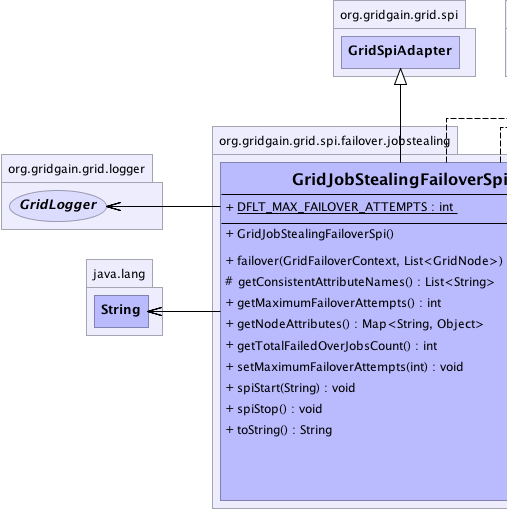
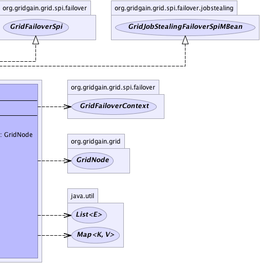

org.gridgain.grid.spi.GridSpiAdapter
org.gridgain.grid.spi.failover.jobstealing.GridJobStealingFailoverSpi
org.gridgain.grid.spi.GridSpiAdapter
org.gridgain.grid.spi.failover.jobstealing.GridJobStealingFailoverSpi
|
GridGain™ 3.6.0c
Community Edition |
|||||||||
| PREV CLASS NEXT CLASS | FRAMES NO FRAMES | |||||||||
| SUMMARY: NESTED | FIELD | CONSTR | METHOD | DETAIL: FIELD | CONSTR | METHOD | |||||||||
java.lang.Object
@GridSpiInfo(author="GridGain Systems",
url="www.gridgain.com",
email="support@gridgain.com",
version="3.6.0c.13012012")
@GridSpiMultipleInstancesSupport(value=true)
public class GridJobStealingFailoverSpi
Job stealing failover SPI needs to always be used in conjunction with
GridJobStealingCollisionSpi SPI. When GridJobStealingCollisionSpi
receives a steal request and rejects jobs so they can be routed to the
appropriate node, it is the responsibility of this GridJobStealingFailoverSpi
SPI to make sure that the job is indeed re-routed to the node that has sent the initial
request to steal it.
GridJobStealingFailoverSpi knows where to route a job based on the
GridJobStealingCollisionSpi.THIEF_NODE_ATTR job context attribute (see GridJobContext).
Prior to rejecting a job, GridJobStealingCollisionSpi will populate this
attribute with the ID of the node that wants to steal this job.
Then GridJobStealingFailoverSpi will read the value of this attribute and
route the job to the node specified.
If failure is caused by a node crash, and not by steal request, then this
SPI behaves identically to GridAlwaysFailoverSpi, and tries to find the
next balanced node to fail-over a job to.
GridJobStealingFailoverSpi.setMaximumFailoverAttempts(int)).GridJobStealingFailoverSpi.
GridJobStealingFailoverSpi spi = new GridJobStealingFailoverSpi(); // Override maximum failover attempts. spi.setMaximumFailoverAttempts(5); GridConfigurationAdapter cfg = new GridConfigurationAdapter(); // Override default failover SPI. cfg.setFailoverSpiSpi(spi); // Starts grid. G.start(cfg);Here is an example of how to configure
GridJobStealingFailoverSpi from Spring XML configuration file.
<property name="failoverSpi">
<bean class="org.gridgain.grid.spi.failover.jobstealing.GridJobStealingFailoverSpi">
<property name="maximumFailoverAttempts" value="5"/>
</bean>
</property>

For information about Spring framework visit www.springframework.org
| Wiki | |
| Forum |
GridFailoverSpi
|  |  |
| Field Summary | |
|---|---|
static int |
DFLT_MAX_FAILOVER_ATTEMPTS
Maximum number of attempts to execute a failed job on another node (default is 5). |
| Constructor Summary | |
|---|---|
GridJobStealingFailoverSpi()
|
|
| Method Summary | |
|---|---|
GridNode |
failover(GridFailoverContext ctx,
List<GridNode> top)
This method is called when method GridTask.result(GridJobResult, List) returns
value GridJobResultPolicy.FAILOVER policy indicating that the result of
job execution must be failed over. |
protected List<String> |
getConsistentAttributeNames()
Returns back a list of attributes that should be consistent for this SPI. |
int |
getMaximumFailoverAttempts()
Gets maximum number of attempts to execute a failed job on another node. |
Map<String,Object> |
getNodeAttributes()
This method is called before SPI starts (before method GridSpi.spiStart(String)
is called). |
int |
getTotalFailedOverJobsCount()
Get total number of jobs that were failed over including stolen ones. |
void |
setMaximumFailoverAttempts(int maxFailoverAttempts)
Sets maximum number of attempts to execute a failed job on another node. |
void |
spiStart(String gridName)
This method is called to start SPI. |
void |
spiStop()
This method is called to stop SPI. |
String |
toString()
|
| Methods inherited from class org.gridgain.grid.spi.GridSpiAdapter |
|---|
assertParameter, checkConfigurationConsistency, configInfo, createSpiAttributeName, getAuthor, getGridGainHome, getLocalNodeId, getName, getSpiContext, getStartTimestamp, getStartTimestampFormatted, getUpTime, getUpTimeFormatted, getVendorEmail, getVendorUrl, getVersion, injectables, onContextDestroyed, onContextInitialized, registerMBean, setJson, setName, startInfo, startStopwatch, stopInfo, unregisterMBean |
| Methods inherited from class java.lang.Object |
|---|
clone, equals, finalize, getClass, hashCode, notify, notifyAll, wait, wait, wait |
| Methods inherited from interface org.gridgain.grid.spi.GridSpi |
|---|
getName, onContextDestroyed, onContextInitialized |
| Methods inherited from interface org.gridgain.grid.spi.GridSpiJsonConfigurable |
|---|
setJson |
| Methods inherited from interface org.gridgain.grid.spi.GridSpiManagementMBean |
|---|
getAuthor, getGridGainHome, getLocalNodeId, getName, getStartTimestamp, getStartTimestampFormatted, getUpTime, getUpTimeFormatted, getVendorEmail, getVendorUrl, getVersion |
| Field Detail |
|---|
public static final int DFLT_MAX_FAILOVER_ATTEMPTS
5).
| Constructor Detail |
|---|
public GridJobStealingFailoverSpi()
| Method Detail |
|---|
public int getMaximumFailoverAttempts()
GridJobStealingFailoverSpi.DFLT_MAX_FAILOVER_ATTEMPTS value will be used.
getMaximumFailoverAttempts in interface GridJobStealingFailoverSpiMBean@GridSpiConfiguration(optional=true) public void setMaximumFailoverAttempts(int maxFailoverAttempts)
GridJobStealingFailoverSpi.DFLT_MAX_FAILOVER_ATTEMPTS value will be used.
Note this value must be identical for all grid nodes in the grid.
maxFailoverAttempts - Maximum number of attempts to execute a failed
job on another node.public int getTotalFailedOverJobsCount()
getTotalFailedOverJobsCount in interface GridJobStealingFailoverSpiMBeanpublic Map<String,Object> getNodeAttributes() throws GridSpiException
GridSpi.spiStart(String)
is called). It allows SPI implementation to add attributes to a local
node. Kernel collects these attributes from all SPI implementations
loaded up and then passes it to discovery SPI so that they can be
exchanged with other nodes.
getNodeAttributes in interface GridSpigetNodeAttributes in class GridSpiAdapterGridSpiException - Throws in case of any error.
public void spiStart(String gridName)
throws GridSpiException
spiStart in interface GridSpiGridSpiException - Throws in case of any error during SPI start.gridName - Name of grid instance this SPI is being started for
(null for default grid).
public void spiStop()
throws GridSpiException
Note that this method can be called at any point including during recovery of failed start. It should make no assumptions on what state SPI will be in when this method is called.
spiStop in interface GridSpiGridSpiException - Thrown in case of any error during SPI stop.
public GridNode failover(GridFailoverContext ctx,
List<GridNode> top)
GridTask.result(GridJobResult, List) returns
value GridJobResultPolicy.FAILOVER policy indicating that the result of
job execution must be failed over. Implementation of this method should examine failover
context and choose one of the grid nodes from supplied topology to retry job execution
on it. For best performance it is advised that GridFailoverContext.getBalancedNode(List)
method is used to select node for execution of failed job.
failover in interface GridFailoverSpictx - Failover context.top - Collection of all grid nodes within task topology (may include failed node).
null if new node cannot be picked.
If job failover fails (returns null) the whole task will be failed.protected List<String> getConsistentAttributeNames()
getConsistentAttributeNames in class GridSpiAdapterpublic String toString()
toString in class Object
|
GridGain™ 3.6.0c
Community Edition |
|||||||||
| PREV CLASS NEXT CLASS | FRAMES NO FRAMES | |||||||||
| SUMMARY: NESTED | FIELD | CONSTR | METHOD | DETAIL: FIELD | CONSTR | METHOD | |||||||||
|
GridGain - Real Time Big Data
|
|

|
|